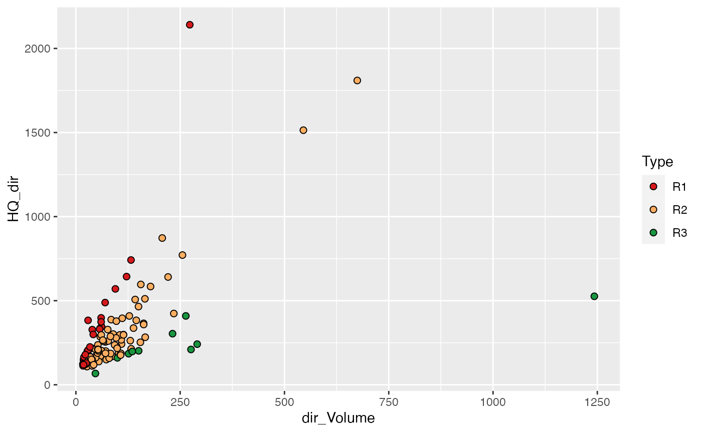

flood_division.Rmd
library(FloodDivision)For the separation of flood events from a discharge timeseries, we need the daily discharge.
date_begin = as.Date("01.01.2000", format = "%d.%m.%Y")
date_end = as.Date("01.01.2004", format="%d.%m.%Y")
set.seed(1)
df_q <- data.frame(
Date = seq(date_begin, date_end, "day"),
discharge = rbeta(1462, 2, 20)*100) # dummy data
head(df_q)
#> Date discharge
#> 1 2000-01-01 5.214863
#> 2 2000-01-02 10.619273
#> 3 2000-01-03 4.267655
#> 4 2000-01-04 12.001508
#> 5 2000-01-05 4.331570
#> 6 2000-01-06 13.694599
flood_events <- eventsep(df_q)
head(flood_events)
#> Begin End Peak_date DailyMQ Volume dir_Volume baseflow_peak
#> 1 2000-01-11 2000-01-20 2000-01-12 23.36334 10.618534 9.880619 0.8286757
#> 2 2000-01-11 2000-01-14 2000-01-12 23.36334 2.938474 2.692502 0.8974125
#> 3 2000-01-13 2000-01-20 2000-01-17 19.64893 7.680061 7.346325 0.6306416
#> 4 2000-01-30 2000-02-15 2000-02-03 22.87885 14.697804 10.851192 2.5932953
#> 5 2000-01-30 2000-02-08 2000-02-03 22.87885 6.463666 4.299947 2.7405013
#> 6 2000-02-05 2000-02-15 2000-02-12 19.03429 8.234137 6.868547 2.2127629
#> baseflow_begin baseflow_end No_Peaks HQ HQ_dir Comments
#> 1 0.7943073 1.103623 1 NA NA
#> 2 0.7943073 1.103623 1 NA NA first wave
#> 3 0.0000000 1.103623 1 NA NA second wave
#> 4 2.4040305 3.161090 1 NA NA
#> 5 2.4040305 3.161090 1 NA NA first wave
#> 6 0.0000000 3.161090 1 NA NA second waveThe Separation might still contain overlaid flood events which need to be corrected.
For the typing of the flood event, multiple characteristics for each flood event must be calculated before:
Sum_SM: Sum of snowmelt during the floodevent in mm
Sum_N: Sum of precipitation during the floodevent in mm (For example from the separation of precipitation)
dir_Volume: Direct volume of the flood event (Volume minus baseflow) in Mio. m³/s (This is calculated in the floodevent separation as well as in the output after running the Run_WebFlood)
HQ_dir: Direct peak (instantaneous flood peak minus baseflow) in m³/s (This is calculated in the floodevent separation as well as in the output after running the Run_WebFlood)
PSI_SM: Runoff coefficient of the flood event with snowmelt + precipitation
# Open the sample flood event data
data("Sample_Flood_events")
head(Sample_Flood_events)
#> Begin End Peak_date Sum_SM Sum_N dir_Volume HQ_dir PSI_SM
#> 1 1950-02-10 1950-02-14 1950-02-11 0.73 14.81 18.45 146.02 0.22
#> 2 1951-01-18 1951-01-26 1951-01-20 1.37 38.45 26.56 108.25 0.12
#> 3 1952-09-12 1952-09-18 1952-09-14 0.09 68.45 22.05 142.18 0.06
#> 4 1953-01-28 1953-02-11 1953-01-30 28.68 52.64 124.25 353.18 0.28
#> 5 1953-02-19 1953-03-04 1953-02-23 17.05 6.27 113.31 209.12 0.89
#> 6 1954-07-08 1954-07-24 1954-07-10 0.09 197.43 545.35 1513.91 0.50
#> TQDir SM_rel HQ
#> 1 35.10 0.05 171.622
#> 2 68.15 0.03 130.075
#> 3 43.08 0.00 167.398
#> 4 97.72 0.35 399.498
#> 5 150.51 0.73 241.032
#> 6 100.06 0.00 1676.301
# Run the event typing
Floods_typed <- Flood_typology(Floods = Sample_Flood_events, n_G = 3, Type_3_min_samplesize = 10)
table(Floods_typed$Type)
#>
#> R1 R2 R3 S1 S2
#> 30 74 10 26 9
# Plot the event typing
Floods_Rain <- Floods_typed[Floods_typed$Type %in% c("R1", "R2", "R3"),]
library(ggplot2)
ggplot(Floods_Rain)+
geom_point(aes(x=dir_Volume, y=HQ_dir, fill=Type),
colour="black", shape=21, size=2)+
scale_fill_manual(values = c("R1"="#D7191C", "R2"="#FDAE61", "R3"= "#1A9641"))